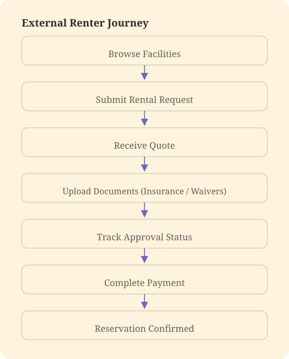
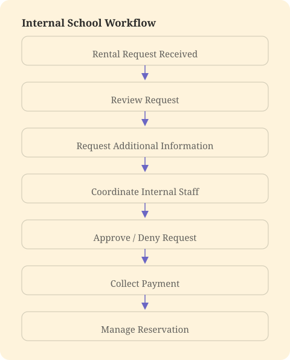

External Rental Feature
Designed an end-to-end External Rentals experience that centralizes pricing, payments, insurance, waivers, and task management for K–12 schools.
Overview
Many K–12 schools manage facility rentals through spreadsheets, emails, and paper forms, creating unnecessary administrative work. I designed an end-to-end External Rentals experience that centralizes pricing, payments, insurance, waivers, and staff task management in one system.
I also created a self-service portal where renters can submit documents, track reservation status, and communicate directly with school staff, making the process simpler for everyone involved.
Problem
Schools relied on fragmented processes to manage facility rentals for community organizations. Rental requests often required weeks of back-and-forth communication, manual approvals, payment collection, insurance verification, waiver management, and coordination across multiple departments.
Administrators lacked a centralized system to manage these workflows, creating unnecessary administrative overhead and a frustrating experience for both schools and renters.
Solution
I designed an end-to-end External Rentals platform that streamlines the entire rental lifecycle for both school administrators and external organizations.
The solution includes an internal management portal for approvals, payments, forms, staff coordination, and messaging, alongside a self-service renter portal where organizations can submit requests, upload required documents, receive quotes, and track the status of their reservation.
Process
Research & Discovery
While interviewing school administrators about event management, we uncovered an unexpected opportunity. Beyond ticketing, schools consistently identified facility rentals as one of their most time-consuming administrative processes.
Although every district handled rentals differently, the underlying workflow remained remarkably consistent.
Key Insights
- Rental requests involved multiple rounds of communication before approval.
- Schools collected payments, waivers, insurance documents, and rental agreements through separate systems.
- Coordinating internal departments (custodial, athletics, audiovisual, administration) required extensive manual follow-up.
- Renters lacked visibility into where their request stood, resulting in frequent status inquiries.
These interviews revealed an opportunity to centralize the entire rental process within Vega while creating a new revenue opportunity for the platform.
Opportunity
The challenge wasn't simply digitizing rental requests. We needed to design a system that connected two completely different user groups, school administrators and external renters, while supporting complex internal workflows happening behind the scenes.
The guiding design principle became: Create one shared workflow that serves two very different user experiences.
User Flows
Before designing interfaces, I mapped the complete rental lifecycle to identify where each user interacted with the system.


Mapping both journeys together exposed opportunities to eliminate duplicate work while improving transparency for everyone involved.
Design & Iteration
Rather than creating isolated tools for each task, I designed a connected platform that supports the entire rental lifecycle.
The internal experience allows administrators to review and approve rental requests, generate quotes and collect payments, request waivers and proof of insurance, assign responsibilities to internal staff, coordinate communication through a centralized messaging portal, and track every rental from request through completion.
The external experience enables renters to submit and edit rental requests, upload required documents, view approval status, receive pricing information, complete payments, and communicate directly with school staff without relying on fragmented email threads.
Throughout the design process, I focused on reducing administrative overhead while keeping both user experiences simple and transparent.
Outcome
The External Rentals platform transformed a highly manual, fragmented workflow into a centralized experience for both schools and community organizations.
By bringing requests, approvals, payments, documentation, staff coordination, and messaging into a single system, the solution reduced administrative complexity while improving visibility throughout the rental process.
This project reinforced the importance of designing beyond individual screens. Solving the problem required understanding an entire service ecosystem and creating connected experiences that met the needs of multiple user groups while supporting complex organizational workflows.